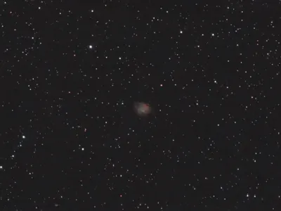
2026.02.12 00:58 15s G60 59:45 Duo-Band
M1 おうし座 超新星残骸
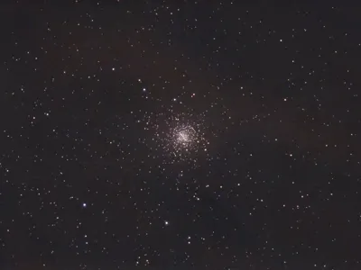
2026.03.11 02:19 15s G60 30:15 Astro
M4 さそり座 球状星団
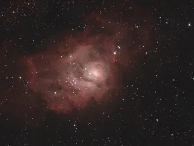
2026.04.03 03:25 15s G60 31:15 Duo-Band
M8 いて座 星団と星雲
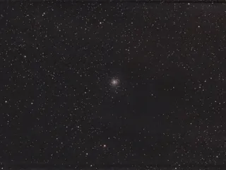
2026.04.01 03:22 15s G60 13:45 Astro
M9 へびつかい座 球状星団
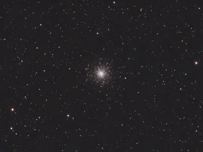
2026.03.24 03:33 15s G60 30:00 Astro
M10 へびつかい座 球状星団
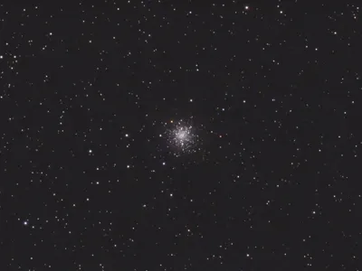
2026.03.24 02:45 15s G60 30:00 Astro
M12 へびつかい座 球状星団
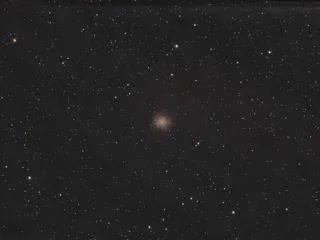
2026.04.01 02:24 15s G60 18:45 Astro
M14 へびつかい座 球状星団
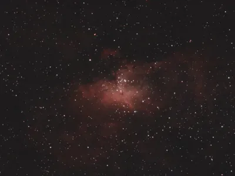
2026.04.09 01:33 15s G60 30:15 Duo-Band
M16 へび座 星団とHII領域
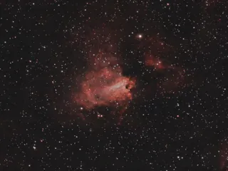
2026.04.09 02:15 15s G60 30:45 Astro
M17 いて座 星団とHII領域
M17：左、M18：右下
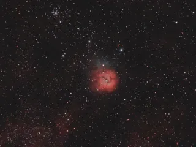
2026.04.03 02:41 15s G60 30:15 Astro
M20 いて座 星団とHII領域
M20：中央、M21：左
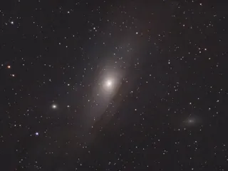
2026.02.03 20:24 15s G60 22:30 Astro
M31 アンドロメダ座 渦巻銀河
M31：中央、M32：左、M110：右
2026.02.15 20:18 15s G60 31:00 Duo-Band
M42 オリオン座 HII領域
M42：中央、M43：上の小さい部分
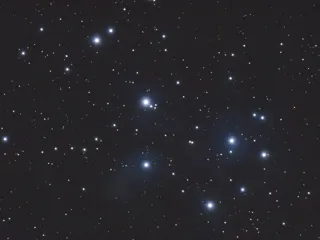
2026.03.10 21:07 15s G60 30:00 Astro
M45 おうし座 散開星団
プレアデス星団／すばる
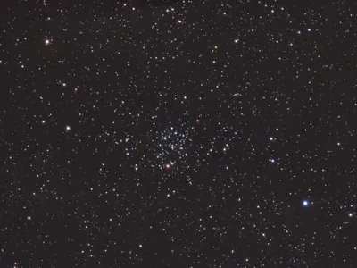
2026.03.12 20:32 15s G60 30:15 Astro
M50 いっかくじゅう座 散開星団
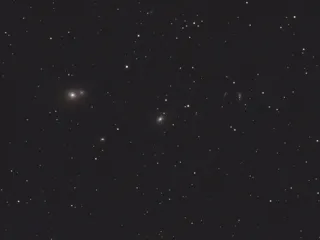
2026.03.15 01:43 15s G60 30:00 Astro
M59 おとめ座 楕円銀河
M59：中央、M60：左
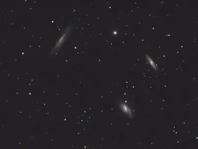
2026.02.28 22:41 15s G60 15:00 Astro
M65 しし座 渦巻銀河
M65：右上、M66：中央下
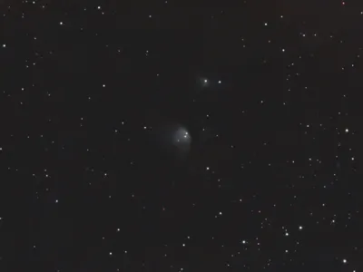
2026.02.11 23:23 15s G60 13:00 Duo-Band
M78 オリオン座 散光星雲
ウルトラの星
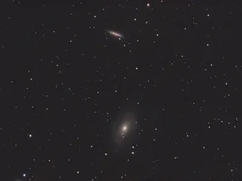
2026.04.03 23:08 15s G60 30:15 Astro
M81 おおぐま座 渦巻銀河
M81：中央下、M82：中央上
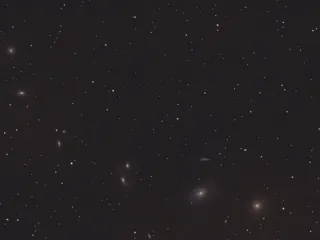
2026.03.20 23:08 15s G60 19:45 Astro
M84 おとめ座 レンズ状銀河
M84：中央、M86：左
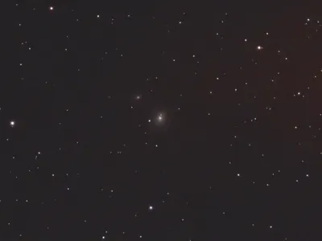
2026.04.03 00:23 15s G60 32:00 Astro
M85 かみのけ座 レンズ状銀河
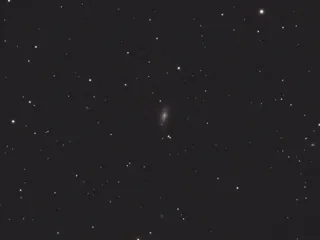
2026.03.21 23:17 15s G60 31:30 Astro
M88 かみのけ座 渦巻銀河
M88：中央、M91：左下
2026.03.13 00:58 15s G60 30:15 Astro
M95 しし座 渦巻銀河
2026.03.14 23:36 15s G60 30:00 Astro
M96 しし座 渦巻銀河
2026.04.03 23:55 15s G60 30:15 Astro
M97 おおぐま座 惑星状星雲
M97：中央下、M108：中央上
2026.03.15 02:26 15s G60 34:00 Astro
M98 かみのけ座 渦巻銀河
2026.02.22 23:42 15s G60 32:30 Astro
M99 かみのけ座 渦巻銀河
2026.03.21 21:17 15s G60 40:15 Astro
M100 かみのけ座 渦巻銀河
2026.02.19 01:48 15s G60 26:15 Astro
M104 おとめ座 渦巻銀河
2026.03.13 00:15 15s G60 30:00 Astro
M105 しし座 楕円銀河
2026.03.24 02:03 15s G60 31:00 Astro
M107 へびつかい座 球状星団
{kind=link}
{kind=link}
{kind=link}
{kind=link}
{kind=link}
{kind=link}
{kind=link}
{kind=link}
{kind=link}
{kind=link}
{kind=link}
{kind=link}
{kind=link}
{kind=link}
{kind=link}
{kind=link}
{kind=link}
{kind=link}
{kind=link}
{kind=link}
{kind=link}
{kind=link}
{kind=link}
{kind=link}
{kind=link}
{kind=link}
{kind=link}
{kind=link}
{kind=link}
{kind=link}
{kind=link}
{kind=link}
{kind=link}
{kind=link}
{kind=link}
{kind=link}
{kind=link}
{kind=link}
{kind=link}
{kind=link}
{kind=link}
{kind=link}
{kind=link}
{kind=link}
{kind=link}
{kind=link}
{kind=link}
{kind=link}
{kind=link}
{kind=link}
{kind=link}
{kind=link}
{kind=link}
{kind=link}
{kind=link}
{kind=link}
{kind=link}
{kind=link}
{kind=link}
{kind=link}